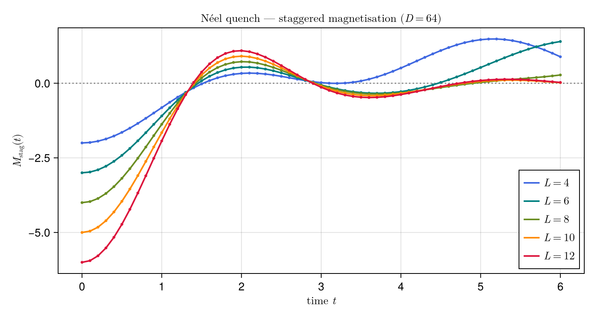
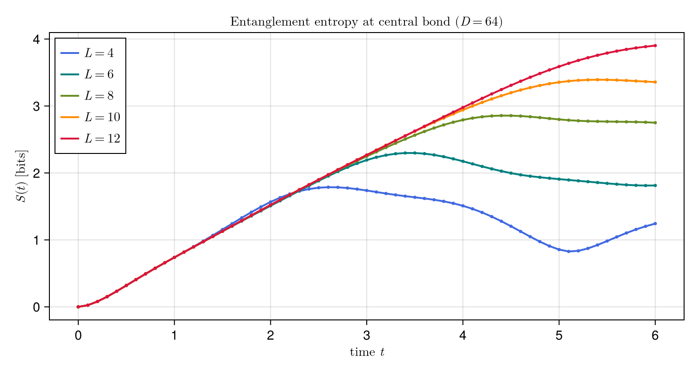

using LinearAlgebra, Qritical
using CairoMakie, LaTeXStrings
L_values = [4, 6, 8, 10, 12]
dof = SpinHalf()
dt = 0.1
nsteps = 60
D = 64
palette = [:royalblue, :teal, :olivedrab, :darkorange, :crimson]
colors = Dict(zip(L_values, palette))
println("Chain lengths: ", L_values, " dt=$dt nsteps=$nsteps D=$D T=", dt*nsteps)Chain lengths: [4, 6, 8, 10, 12] dt=0.1 nsteps=60 D=64 T=6.0
Ex 8. Real-Time TEBD: Néel Quench under XXZ
Week 8 — the payoff of the whole time-evolution track. Weeks 6–7 built the machinery (MPO, gates, Trotter steps); this week we point it at a genuine non-equilibrium problem — a quantum quench. Prepare a simple product state that is not an eigenstate of $H$, switch $H$ on, and watch it relax. This is the real-time twin of the imaginary-time (finite-temperature) evolution that Week 8's reading (Schollwöck §7.2) covers: the same TEBD engine, run along the real axis instead of the imaginary one.
We start the Néel product state $|\uparrow\downarrow\uparrow\downarrow\cdots\rangle$ and quench under the XXZ Hamiltonian. Two signatures of many-body dynamics are monitored:
- Staggered magnetization $M_{\rm stag}(t) = \sum_i(-1)^i \langle S^z_i\rangle$ decays from its initial value $-L/2$ as spins begin to flip.
- Entanglement entropy $S(t)$ at the central bond grows linearly with time (ballistic spreading of entanglement).
The quench injects energy locally and sets off correlations that spread at a finite maximum speed (the Lieb–Robinson velocity) — an emergent "light cone" for a non-relativistic lattice. Across the central cut, the number of entangled quasiparticle pairs straddling the bond grows linearly in time, so the entanglement entropy climbs like $S(t)\approx v_E\,t$. That linear growth is exactly what makes real-time evolution hard: the required bond dimension is $\chi\sim 2^{S(t)}\sim e^{v_E t}$, so a fixed cap $D$ can only follow the dynamics up to a finite time — the "entanglement barrier" that bounds every TEBD simulation.
For each L: build Néel state, run TEBD, record Mstag and central-bond entropy. Both observables are computed in one pass — no need to re-run the evolution. We sweep several chain lengths so the finite-size fingerprints (below) are visible: short chains equilibrate and revive sooner, and their entropy saturates earlier because their maximal Schmidt rank $2^{L/2}$ is smaller than the cap $D$.
Mstag_data = Dict{Int, Vector{Float64}}()
S_data = Dict{Int, Vector{Float64}}()
times = dt .* (0:nsteps) # include t=0
for L in L_values
g = Chain(L)
H = XXZ(g; J=1.0, Jz=1.0, h=0.0)
ψ_t = canonicalize(neel_state(g; dof=dof), LeftCanonical())
W_stag = MPO(staggered_magnetization(g; dof=dof))
W_Sz = MPO(total_magnetization(g; dof=dof))
#= t=0: product state has Mstag = -L/2 and S = 0 =#
Mstag_L = [real(expect(ψ_t, W_stag))]
S_L = [0.0]
for step in 1:nsteps
ψ_t = trotter_step(ψ_t, H, dt, SuzukiTrotter(2); trunc=MaxBondDimTrunc(D))
ψ_c = canonicalize(ψ_t, BondCanonical(L÷2))
push!(Mstag_L, real(expect(ψ_c, W_stag)))
sv = ψ_c.bond_svs[L÷2 + 1].values
p = sv.^2 ./ sum(sv.^2)
push!(S_L, -sum(pᵢ -> pᵢ > 0 ? pᵢ * log2(pᵢ) : 0.0, p))
ψ_t = ψ_c
end
Mstag_data[L] = Mstag_L
S_data[L] = S_L
println("L=$L done Mstag(T)=", round(Mstag_L[end]; sigdigits=3),
" S(T)=", round(S_L[end]; sigdigits=3), " bits")
endL=4 done Mstag(T)=0.887 S(T)=1.24 bits
L=6 done Mstag(T)=1.4 S(T)=1.81 bits
L=8 done Mstag(T)=0.277 S(T)=2.75 bits
L=10 done Mstag(T)=0.0204 S(T)=3.36 bits
L=12 done Mstag(T)=0.0266 S(T)=3.9 bits
Sanity check: at $t=0$ the product state gives $M_{\rm stag}(0) = -L/2$ exactly.
println("Summary at t=0:")
for L in L_values
println(" L=$L Mstag(0)=", Mstag_data[L][1], " (expected ", -L/2, ") S(0)=", S_data[L][1])
endSummary at t=0:
L=4 Mstag(0)=-2.0 (expected -2.0) S(0)=0.0
L=6 Mstag(0)=-3.0 (expected -3.0) S(0)=0.0
L=8 Mstag(0)=-4.0 (expected -4.0) S(0)=0.0
L=10 Mstag(0)=-5.0 (expected -5.0) S(0)=0.0
L=12 Mstag(0)=-6.0 (expected -6.0) S(0)=0.0
Staggered magnetisation decay for each chain length.
fig = Figure(size=(750, 400))
ax = Axis(fig[1,1];
title = L"Néel quench — staggered magnetisation ($D = %$D$)",
xlabel = L"time $t$",
ylabel = L"M_{\mathrm{stag}}(t)",
)
hlines!(ax, [0.0]; color=:gray, linestyle=:dot)
for L in L_values
lines!( ax, times, Mstag_data[L]; color=colors[L], linewidth=2.0, label=L"L = %$L")
scatter!(ax, times, Mstag_data[L]; color=colors[L], markersize=5)
end
axislegend(ax; position=:rb)
fig
Entanglement entropy growth at the central bond, for the same chain lengths.
fig2 = Figure(size=(750, 400))
ax2 = Axis(fig2[1,1];
title = L"Entanglement entropy at central bond ($D = %$D$)",
xlabel = L"time $t$",
ylabel = L"S(t) \; [\mathrm{bits}]",
)
for L in L_values
lines!( ax2, times, S_data[L]; color=colors[L], linewidth=2.0, label=L"L = %$L")
scatter!(ax2, times, S_data[L]; color=colors[L], markersize=5)
end
axislegend(ax2; position=:lt)
fig2
Extracting the entanglement velocity. The slope of $S(t)$ at short times is the entanglement velocity $v_E$ — a physical rate set by the model, not the algorithm. Because it is a property of the bulk dynamics, it should be essentially $L$-independent: every chain grows entanglement at the same rate until finite size or the bond cap intervenes. We fit a straight line over the first ten steps ($t\in[0.1,1.0]$), skipping $t=0$ where $S=0$ holds trivially. Short-time entanglement velocity: S(t) ≈ vₑ·t (ballistic spreading). Fit over the first 10 steps (t=0.1..1.0), excluding t=0 where S=0 trivially.
println("Short-time entanglement velocities (linear fit, t ∈ [0.1, 1.0]):")
for L in L_values
t_fit = times[2:11]
S_fit = S_data[L][2:11]
coeffs = [ones(10) t_fit] \ S_fit
v_E = coeffs[2]
println(" L=$L: vₑ ≈ ", round(v_E; sigdigits=3), " bits/time")
endShort-time entanglement velocities (linear fit, t ∈ [0.1, 1.0]):
L=4: vₑ ≈ 0.815 bits/time
L=6: vₑ ≈ 0.816 bits/time
L=8: vₑ ≈ 0.816 bits/time
L=10: vₑ ≈ 0.816 bits/time
L=12: vₑ ≈ 0.816 bits/time
Two effects are worth hunting for in the plots:
- Staggered magnetisation decays faster for smaller $L$: a small system equilibrates sooner, and once a correlation front has traversed the chain and reflected off the boundaries it can revive, visible for the shortest chains within $t\lesssim 3$.
- Entanglement entropy grows at the same short-time slope $v_E$ for every $L$ (the velocity is a bulk property), but saturates earlier for shorter chains, because the accessible entropy is capped at $\log_2\min(2^{L/2}, D)$. This is why $D=64$ is irrelevant for $L=4$ (maximal Schmidt rank $2^{2}=4$) yet actively limits $L=12$.
\[M_{\rm stag}(t)\]
and $S(t)$ are read off the same evolved state each step — the staggered magnetisation from an MPO expectation value, the entropy straight from the central bond's Schmidt spectrum after re-centring with BondCanonical(L÷2). Running the Trotter loop once and harvesting both avoids evolving the state twice, and starting times at $t=0$ anchors the plots at the exact product-state values $M_{\rm stag}(0)=-L/2$, $S(0)=0$.
This page was generated using Literate.jl.